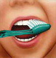
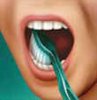
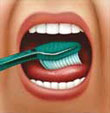
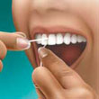
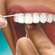

O que é uma boa higiene bucal?
- Seus dentes ficam limpos e livres de resíduos alimentares;
- A gengiva não sangra nem dói durante a escovação e o uso do fio dental;
- O mau hálito deixa de ser um problema permanente.
Consulte o seu dentista caso sua gengiva doa ou sangre quando você escova os dentes ou usa fio dental, e principalmente se estiver passando por um problema de mau hálito. Essas manifestações podem ser a indicação da existência de um problema mais grave.
Seu dentista pode ensiná-lo a usar técnicas corretas de higiene bucal e indicar as áreas que exigem atenção extra durante a escovação e o uso do fio dental.
Como garantir uma boa higiene bucal?
Uma boa higiene bucal é uma das medidas mais importantes que você pode adotar para manter seus dentes e gengiva em ordem. Dentes saudáveis não só contribuem para que você tenha uma boa aparência, mas são também importantes para que você possa falar bem e mastigar corretamente os alimentos. Manter uma boca saudável é importante para o bem-estar geral das pessoas. Os cuidados diários preventivos, tais como uma boa escovação e o uso correto do fio dental, ajudam a evitar que os problemas dentários se tornem mais graves. Devemos ter em mente que a prevenção é a maneira mais econômica, menos dolorida e menos preocupante de se cuidar da saúde bucal e que ao se fazer prevenção estamos evitando o tratamento de problemas que se tornariam graves. Existem algumas medidas muito simples que cada um de nós pode tomar para diminuir significativamente o risco do desenvolvimento de cárie, gengivite e outros problemas bucais.
- Escovar bem os dentes e usar o fio dental diariamente.
- Ingerir alimentos balanceados e evitar comer entre as principais refeições.
- Usar produtos de higiene bucal, inclusive creme dental, que contenham flúor.
- Usar enxagüante bucal com flúor, caso seu dentista recomende.
- Garantir que crianças abaixo de 12 anos tomem água potável fluoretada ou suplementos de flúor, se habitarem regiões onde não haja flúor na água.
Técnicas corretas de escovação:

Coloque a escova em um ângulo de 45 graus em relação à gengiva. Movimente a escova, afastando-a da gengiva.

Escove delicadamente as partes internas, externas e de mastigação de cada dente com movimentos curtos de trás para frente.

Com cuidado, escove a língua para remover bactérias e purificar o hálito.
Uso correto do fio dental:
Use aproxima- damente 40 centímetros de fio, deixando um pedaço livre entre os dedos.

Siga, com cuidado, as curvas dos dentes.

Assegure-se de limpar além da linha da gengiva, mas não force demasiado o fio contra a gengiva.